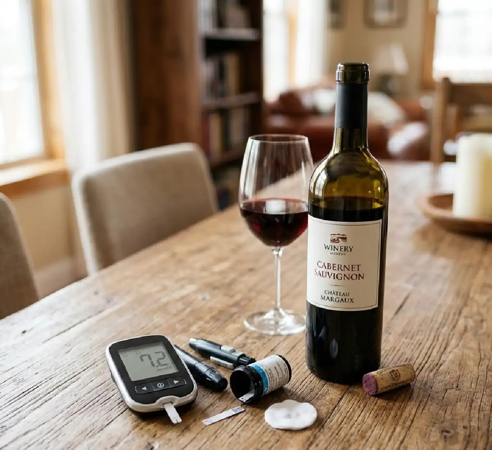

+38(068) 79 72 782
+38(068) 79 72 782Алкоголь та цукровий діабет
Приховані ускладення від алкоголю при діабеті


Безкоштовна консультація, працюємо цілодобово 24/7
Приховані ускладення від алкоголю при діабеті

Цукровий діабет — це хронічне ендокринне захворювання, при якому порушується обмін глюкози в організмі та змінюється робота гормону інсуліну. Інсулін відіграє ключову роль у регуляції рівня цукру в крові, допомагаючи клітинам засвоювати глюкозу та використовувати її як джерело енергії. При діабеті цей механізм працює неправильно: або організм виробляє недостатню кількість інсуліну, або тканини стають менш чутливими до його дії. У результаті рівень цукру в крові може підвищуватися, що поступово призводить до ураження різних органів і систем.
Підтримання стабільного рівня глюкози є однією з головних умов збереження здоров’я при цукровому діабеті. Для цього пацієнтам необхідно регулярно контролювати рівень цукру, дотримуватися дієти, виконувати рекомендації лікаря та приймати призначені препарати або інсулін. Будь-які фактори, які можуть порушити цей баланс, потребують особливої уваги. Одним із таких факторів є вживання алкоголю.
Алкоголь при цукровому діабеті становить особливу проблему, оскільки етанол чинить комплексний вплив на організм. Він впливає на обмін речовин, змінює роботу печінки, впливає на гормональну регуляцію та може порушувати процеси утворення і використання глюкози. Печінка відіграє важливу роль у підтриманні нормального рівня цукру в крові, оскільки саме в цьому органі відбувається утворення глюкози із запасів глікогену. Однак при надходженні алкоголю печінка насамперед займається його нейтралізацією, через що процеси регуляції рівня глюкози тимчасово порушуються.
Навіть невеликі дози спиртних напоїв можуть викликати помітні коливання рівня цукру в крові. У деяких випадках алкоголь спочатку підвищує рівень глюкози, особливо якщо напій містить велику кількість цукру або вуглеводів. Через деякий час можливе різке зниження рівня глюкози, що пов’язано з пригніченням вироблення глюкози в печінці. Такий стан може призвести до гіпоглікемії — небезпечного зниження цукру в крові, яке супроводжується слабкістю, запамороченням, пітливістю, порушенням координації і навіть втратою свідомості.
Алкоголь чинить складний і неоднозначний вплив на рівень глюкози в крові. Реакція організму на спиртні напої може бути різною і залежить від багатьох факторів: типу діабету, кількості випитого алкоголю, складу напою, прийому їжі, рівня фізичної активності та застосовуваної медикаментозної терапії. Саме тому вплив алкоголю на рівень цукру може бути непередбачуваним і вимагати підвищеної уваги з боку пацієнта. У перші години після вживання спиртних напоїв рівень цукру справді може підвищуватися. Особливо це характерно для напоїв, що містять велику кількість цукру та швидких вуглеводів. До таких належать солодкі вина, лікери, десертні алкогольні напої, різні коктейлі та деякі сорти пива. Вуглеводи з цих напоїв швидко всмоктуються в кров, спричиняючи короткочасне підвищення рівня глюкози.
Однак основна небезпека полягає в іншому механізмі дії алкоголю. Етанол суттєво впливає на роботу печінки — органа, який відіграє ключову роль у підтриманні стабільного рівня цукру в крові. У нормальних умовах печінка постійно бере участь у регуляції глюкози, вивільняючи її із запасів глікогену або синтезуючи з інших речовин. Ці процеси допомагають підтримувати стабільний рівень цукру між прийомами їжі, особливо в нічний час або при тривалих перервах у харчуванні. Коли в організм надходить алкоголь, печінка переключається на його нейтралізацію. Для організму етанол є токсичною речовиною, тому процеси його переробки стають пріоритетними. У цей період здатність печінки виробляти глюкозу значно знижується. У результаті рівень цукру в крові може поступово падати, особливо якщо людина не вживає їжу або приймає цукрознижувальні препарати.
Така ситуація може призвести до розвитку гіпоглікемії — небезпечного стану, при якому рівень глюкози в крові стає занадто низьким. Гіпоглікемія може розвинутися не одразу, а через кілька годин після вживання алкоголю, іноді навіть уночі. Це робить ситуацію особливо небезпечною, оскільки людина може не пов’язати погіршення самопочуття з раніше випитим алкоголем. Симптоми гіпоглікемії включають виражену слабкість, запаморочення, холодний піт, тремтіння в руках, прискорене серцебиття і відчуття тривоги. У більш тяжких випадках можуть виникати порушення координації, сплутаність свідомості, утруднення мовлення та втрата свідомості. Без своєчасної допомоги такий стан може становити серйозну загрозу для здоров’я.
Питання вживання алкоголю при цукровому діабеті повинно вирішуватися індивідуально й обов’язково обговорюватися з лікарем. Діабет — це захворювання, при якому організм стає більш чутливим до різних зовнішніх факторів, що впливають на обмін речовин. Тому будь-які зміни у способі життя, включаючи вживання спиртних напоїв, можуть суттєво позначатися на рівні глюкози в крові та загальному стані пацієнта. У деяких випадках невеликі дози алкоголю можуть бути допустимими, однак лише за умови суворого дотримання рекомендацій лікаря та правил безпеки. Важливо розуміти, що універсальних рекомендацій для всіх пацієнтів із діабетом не існує. Реакція організму на алкоголь може суттєво відрізнятися залежно від індивідуальних особливостей обміну речовин, тривалості захворювання та наявності супутніх патологій.
Під час прийняття рішення щодо можливості вживання алкоголю необхідно враховувати кілька важливих факторів. Насамперед має значення тип цукрового діабету. При діабеті 1 типу організм повністю залежить від введення інсуліну, тому ризик розвитку гіпоглікемії значно вищий. Навіть невелика кількість алкоголю може викликати різке падіння рівня цукру, особливо якщо спиртне вживається без їжі. Не менш важливим фактором є використовувана терапія. Деякі цукрознижувальні препарати у поєднанні з алкоголем можуть посилювати ризик гіпоглікемії або чинити додаткове навантаження на печінку. При інсулінотерапії також зростає ймовірність коливань рівня глюкози, тому пацієнтам необхідно особливо уважно контролювати показники цукру.
Також важливо враховувати стан печінки та серцево-судинної системи. Печінка бере безпосередню участь у переробці алкоголю і водночас відіграє ключову роль у регуляції рівня глюкози. Якщо функція печінки порушена, вплив алкоголю може бути більш вираженим і небезпечним. Крім того, алкоголь здатний підвищувати артеріальний тиск, порушувати серцевий ритм і збільшувати навантаження на серцево-судинну систему. Суттєве значення має наявність ускладнень діабету. При ураженні судин, нервової системи, нирок або очей вживання алкоголю може прискорювати прогресування цих порушень. Також необхідно враховувати загальний рівень контролю глюкози. Якщо цукор у крові часто коливається або захворювання погано компенсоване, вживання спиртних напоїв може додатково дестабілізувати стан.
Навіть при хорошому контролі захворювання алкоголь здатний порушувати метаболічний баланс. Він впливає на роботу печінки, змінює обмін вуглеводів і може викликати як підвищення, так і різке зниження рівня глюкози. Саме тому більшість лікарів рекомендують максимально обмежити вживання спиртних напоїв або повністю відмовитися від них. Такий підхід дозволяє знизити ризик ускладнень і підтримувати більш стабільний перебіг цукрового діабету.
Гіпоглікемія — одне з найнебезпечніших ускладнень, яке може виникати у людей із цукровим діабетом після вживання алкоголю. Цей стан характеризується значним зниженням рівня глюкози в крові й може становити серйозну загрозу для здоров’я. Особливо високий ризик гіпоглікемії спостерігається у пацієнтів, які отримують інсулінотерапію або приймають цукрознижувальні препарати. Основна причина розвитку гіпоглікемії після вживання алкоголю пов’язана з особливостями роботи печінки. У нормальних умовах печінка виконує важливу функцію підтримання стабільного рівня глюкози в крові. Вона здатна вивільняти глюкозу із запасів глікогену або синтезувати її з інших речовин. Цей механізм дозволяє організму підтримувати необхідний рівень цукру між прийомами їжі та запобігати різким коливанням глікемії.
Однак при надходженні алкоголю в організм пріоритетним завданням печінки стає нейтралізація етанолу. Алкоголь сприймається організмом як токсична речовина, тому процеси його переробки запускаються в першу чергу. У цей період здатність печінки виробляти глюкозу значно знижується або тимчасово припиняється. У результаті організм може залишитися без важливого механізму підтримання нормального рівня цукру. Якщо людина одночасно отримує інсулін або приймає цукрознижувальні препарати, ризик гіпоглікемії значно зростає. Ці ліки знижують рівень глюкози в крові, а алкоголь додатково блокує компенсаторні механізми організму. Таке поєднання може призвести до швидкого і вираженого падіння цукру.
Особливо небезпечним є вживання алкоголю натщесерце. У цьому випадку рівень глюкози в крові спочатку може бути нижчим, а запаси глікогену в печінці — обмеженими. Аналогічна ситуація виникає після інтенсивного фізичного навантаження, коли організм уже використав значну частину енергетичних запасів. Якщо в такий момент людина вживає алкоголь, імовірність розвитку гіпоглікемії значно зростає. Ще однією особливістю алкогольної гіпоглікемії є те, що вона може розвиватися не одразу. Іноді зниження рівня цукру відбувається через кілька годин після вживання спиртного, нерідко в нічний час. Це робить ситуацію особливо небезпечною, оскільки людина може не пов’язувати погіршення самопочуття з раніше вжитим алкоголем.
При цукровому діабеті 1 типу організм повністю залежить від введення інсуліну, оскільки власне вироблення цього гормону або відсутнє, або вкрай недостатнє. Інсулін необхідний для того, щоб глюкоза з крові могла надходити в клітини та використовуватися організмом як джерело енергії. Будь-які коливання рівня цукру в крові при такому захворюванні можуть швидко призводити до погіршення самопочуття та розвитку небезпечних станів. Алкоголь при діабеті 1 типу становить особливу небезпеку, оскільки він здатний значно порушувати механізми регуляції глюкози в організмі. Навіть невелика кількість спиртного може призвести до непередбачуваних змін рівня цукру. Це пов’язано з тим, що алкоголь впливає на роботу печінки, змінює процеси обміну речовин і може посилювати дію інсуліну.
Однією з головних небезпек є підвищення ризику тяжкої гіпоглікемії. Після вживання алкоголю печінка тимчасово припиняє вироблення глюкози із запасів глікогену, оскільки основне завдання організму в цей момент — переробка етанолу. Якщо в цей час в організмі присутній інсулін, рівень цукру може різко знижуватися. Такий стан може супроводжуватися вираженою слабкістю, запамороченням, тремтінням у руках, холодним потом і порушенням свідомості. Крім того, алкоголь може суттєво порушувати контроль рівня глюкози. У пацієнтів із діабетом 1 типу підтримання стабільних показників цукру вимагає регулярного вимірювання глюкози, корекції дози інсуліну та дотримання режиму харчування. Вживання спиртних напоїв може порушувати ці процеси, оскільки алкоголь впливає на апетит, уповільнює реакцію людини та знижує здатність адекватно оцінювати свій стан.
Ще однією важливою проблемою є погіршення здатності пацієнта розпізнавати симптоми падіння цукру. Деякі ознаки гіпоглікемії — такі як порушення координації, уповільненість реакцій, сонливість або сплутаність свідомості — можуть бути схожими на прояви алкогольного сп’яніння. У результаті людина може не одразу зрозуміти, що рівень глюкози в крові небезпечно знизився. Особливо високий ризик пов’язаний із розвитком нічної гіпоглікемії. Після вживання алкоголю зниження рівня цукру може відбуватися через кілька годин, найчастіше в нічний час, коли людина спить. Нічна гіпоглікемія небезпечна тим, що людина може не відчути погіршення стану уві сні та не вжити необхідних заходів для підвищення рівня глюкози.
При цукровому діабеті 2 типу вживання алкоголю також може суттєво погіршувати перебіг захворювання. Цей тип діабету пов’язаний насамперед із порушенням чутливості тканин організму до інсуліну — станом, який називається інсулінорезистентністю. У результаті глюкоза гірше засвоюється клітинами, її рівень у крові підвищується, а підшлункова залоза змушена виробляти більше інсуліну. Алкоголь здатний додатково впливати на ці процеси та порушувати метаболічний баланс.
Етанол впливає на обмін вуглеводів, роботу печінки та гормональну регуляцію. Він може змінювати чутливість тканин до інсуліну і знижувати ефективність цукрознижувальних препаратів. У деяких випадках алкоголь посилює дію ліків, що підвищує ризик гіпоглікемії, а в інших — навпаки, призводить до нестабільного підвищення рівня глюкози. Тому реакція організму на спиртні напої при діабеті 2 типу може бути непередбачуваною. Одним із основних ризиків є коливання рівня глюкози в крові. Після вживання алкоголю можливе як тимчасове підвищення цукру, особливо якщо напій містить велику кількість вуглеводів, так і його подальше зниження через вплив етанолу на функції печінки. Такі коливання ускладнюють контроль захворювання і можуть погіршувати загальний стан пацієнта.
Алкоголь також може сприяти збільшенню маси тіла. Багато алкогольних напоїв мають високу калорійність, а їх регулярне вживання може призводити до накопичення зайвої ваги. Надмірна маса тіла є одним із ключових факторів прогресування діабету 2 типу, оскільки вона посилює інсулінорезистентність і підвищує навантаження на підшлункову залозу. Додаткову проблему створює вплив алкоголю на печінку. Цей орган відіграє важливу роль в обміні глюкози та переробці поживних речовин. При регулярному вживанні спиртних напоїв може розвиватися жирова інфільтрація печінки, запальні зміни та інші порушення її функцій. Це негативно позначається на здатності організму регулювати рівень цукру в крові.
Алкоголь також здатний підвищувати артеріальний тиск і чинити несприятливий вплив на серцево-судинну систему. У людей із діабетом ризик серцево-судинних захворювань уже підвищений, а вживання спиртних напоїв може додатково збільшувати ймовірність розвитку гіпертонії, атеросклерозу, інфаркту міокарда та інсульту. Крім того, регулярне вживання алкоголю може прискорювати розвиток хронічних ускладнень цукрового діабету. До них належать ураження судин, нервової системи, нирок і органів зору. Метаболічні порушення, викликані алкоголем, можуть посилювати ушкодження тканин і погіршувати довгостроковий прогноз захворювання. Тому людям із діабетом 2 типу рекомендується особливо уважно ставитися до вживання спиртних напоїв і по можливості максимально обмежувати їх кількість.
Деякі види алкогольних напоїв становлять особливу небезпеку для людей із цукровим діабетом. Це пов’язано з тим, що різні види алкоголю по-різному впливають на рівень глюкози в крові, обмін речовин і роботу печінки. Особливу проблему становлять напої, що містять велику кількість цукру та швидких вуглеводів. Вони можуть викликати різкі коливання рівня глюкози, що ускладнює контроль захворювання і підвищує ризик розвитку ускладнень. До найбільш небажаних напоїв для людей із діабетом належать солодкі лікери. У їхньому складі часто міститься велика кількість цукру, сиропів та ароматичних добавок. Такі напої швидко підвищують рівень глюкози в крові, особливо якщо вживаються без їжі. Різке підвищення цукру може супроводжуватися погіршенням самопочуття, а через деякий час можливе його різке зниження.
Десертні вина також містять значну кількість цукру. Незважаючи на відносно невисоку міцність, такі напої здатні помітно впливати на рівень глюкози, викликаючи його підвищення. При регулярному вживанні вони можуть ускладнювати контроль діабету та сприяти розвитку метаболічних порушень. Солодкі алкогольні коктейлі вважаються однією з найбільш несприятливих категорій напоїв для людей із діабетом. До їхнього складу часто входять сиропи, фруктові соки, цукор і газовані напої. Комбінація алкоголю та великої кількості вуглеводів призводить до швидкого надходження цукру в кров, що викликає значні коливання рівня глюкози.
Міцні алкогольні напої у великих дозах також становлять серйозну небезпеку. Хоча такі напої, як горілка, віскі або коньяк, не містять великої кількості цукру, високий вміст етанолу чинить виражений вплив на печінку. Це може призводити до пригнічення вироблення глюкози та підвищувати ризик гіпоглікемії через кілька годин після вживання алкоголю. Пиво з високим вмістом вуглеводів також може бути небажаним для людей із діабетом. Деякі сорти пива містять значну кількість вуглеводів, які швидко всмоктуються і підвищують рівень цукру в крові. При цьому пиво часто вживається в більшому обсязі, ніж міцні напої, що додатково збільшує калорійність і навантаження на обмін речовин.
Вживання перелічених напоїв може викликати різкі коливання рівня глюкози в крові. Спочатку відбувається її підвищення через надходження вуглеводів, а потім можливе зниження рівня цукру, пов’язане з впливом алкоголю на роботу печінки. Такі перепади становлять особливу небезпеку для людей із цукровим діабетом і можуть призводити до погіршення загального стану.
Вживання алкоголю при цукровому діабеті може підвищувати ризик розвитку тяжких ускладнень, включаючи діабетичну кому. Це один із найнебезпечніших станів, при якому відбувається виражене порушення обміну речовин і критична зміна рівня глюкози в крові. Діабетична кома потребує термінової медичної допомоги і без своєчасного лікування може становити серйозну загрозу для життя.
Алкоголь здатний впливати на розвиток як гіпоглікемічних, так і гіперглікемічних станів. В одному випадку відбувається різке зниження рівня цукру в крові — гіпоглікемія. Це може виникати через те, що алкоголь пригнічує здатність печінки виробляти глюкозу, особливо якщо людина приймає інсулін або цукрознижувальні препарати. В іншому випадку можлива виражена гіперглікемія — підвищення рівня цукру, яке може бути пов’язане з уживанням солодких алкогольних напоїв, порушенням режиму харчування або пропуском прийому ліків.
Гіпоглікемічна кома розвивається при критичному зниженні рівня глюкози. Вона може супроводжуватися вираженою слабкістю, сильною пітливістю, порушенням координації, сплутаністю свідомості та втратою свідомості. Гіперглікемічна кома, навпаки, виникає при значному підвищенні рівня цукру в крові й може супроводжуватися вираженою спрагою, частим сечовипусканням, сухістю шкіри та слизових оболонок, слабкістю і порушенням свідомості.
Алкоголь значно підвищує ризик таких станів, оскільки він впливає на здатність людини контролювати свій стан. Після вживання спиртних напоїв знижується увага, уповільнюється реакція, погіршується здатність правильно оцінювати симптоми погіршення самопочуття. Людина може не помітити небезпечних змін рівня цукру або вчасно не вжити необхідних заходів.
Особливо небезпечною є ситуація, коли алкоголь маскує симптоми погіршення стану. Багато ознак гіпоглікемії — хитка хода, порушення мовлення, сонливість або сплутаність свідомості — можуть нагадувати звичайне алкогольне сп’яніння. Оточуючі люди можуть помилково сприймати такі прояви як нормальну реакцію на спиртне і не підозрювати про розвиток небезпечного стану.
Гіпоглікемія після вживання алкоголю може розвиватися поступово і не завжди проявляється одразу після прийому спиртних напоїв. Іноді зниження рівня глюкози відбувається через кілька годин, коли людина вже перестала відчувати ефект алкоголю. У деяких випадках гіпоглікемія може виникати вночі, під час сну, що робить ситуацію особливо небезпечною. Це пов’язано з тим, що алкоголь пригнічує здатність печінки виробляти глюкозу, і організм втрачає один із ключових механізмів підтримання нормального рівня цукру в крові.
Симптоми гіпоглікемії можуть проявлятися по-різному і залежать від ступеня зниження рівня глюкози. На ранніх етапах організм намагається компенсувати нестачу цукру за рахунок активації гормонів стресу, що викликає характерні ознаки погіршення стану. До найпоширеніших симптомів гіпоглікемії після вживання алкоголю належать:
У міру зниження рівня глюкози симптоми можуть посилюватися. Людина може відчувати різку сонливість, дезорієнтацію, труднощі з мовленням або зором. У тяжких випадках можлива втрата свідомості, розвиток судом і стан, що потребує невідкладної медичної допомоги. Особливу небезпеку становить той факт, що багато симптомів гіпоглікемії можуть нагадувати прояви алкогольного сп’яніння. Через це оточуючі люди можуть не одразу розпізнати небезпечний стан, а сам пацієнт може недооцінити серйозність того, що відбувається. При появі подібних ознак необхідно якомога швидше перевірити рівень цукру в крові за допомогою глюкометра. Якщо рівень глюкози знижений, рекомендується негайно прийняти швидкі вуглеводи — наприклад, таблетки глюкози, солодкий сік, цукор або інші легко засвоювані джерела глюкози. Після цього бажано повторно проконтролювати рівень цукру і за потреби вжити додаткових заходів.
Цукровий діабет уже сам по собі значно підвищує ризик ураження судин. Тривале підвищення рівня глюкози в крові призводить до пошкодження внутрішньої оболонки судин, порушення їх еластичності та погіршення кровообігу. З часом такі зміни можуть зачіпати як великі артерії, так і дрібні судини, які забезпечують живлення тканин і органів. Вживання алкоголю при діабеті може додатково посилювати ці патологічні процеси та прискорювати розвиток судинних ускладнень. Алкоголь впливає на судинну систему одразу кількома механізмами. Він здатний змінювати тонус судин, впливати на рівень артеріального тиску, а також порушувати обмін речовин. При регулярному вживанні спиртних напоїв збільшується навантаження на серцево-судинну систему, що особливо небезпечно для людей із уже наявними метаболічними порушеннями.
Одним із найпоширеніших ефектів алкоголю є підвищення артеріального тиску. Навіть помірне вживання спиртного може викликати тимчасове підвищення тиску, а при регулярному вживанні цей ефект може ставати постійним. У людей із діабетом артеріальна гіпертензія значно збільшує ризик розвитку ускладнень з боку серця і судин. Алкоголь також може сприяти пошкодженню судинної стінки. Під впливом етанолу і продуктів його обміну погіршується стан ендотелію — внутрішнього шару судин, який відіграє важливу роль у регуляції кровотоку. Пошкодження ендотелію сприяє розвитку запальних процесів, порушенню нормального кровообігу та формуванню атеросклеротичних змін.
Основною проблемою стає порушення мікроциркуляції. Дрібні судини забезпечують живлення тканин киснем і поживними речовинами. При діабеті мікроциркуляція вже може бути порушена, а алкоголь здатний ще більше погіршувати кровопостачання тканин. Це особливо важливо для судин сітківки ока, нирок і нервової системи, які найбільш чутливі до змін кровотоку. Крім того, алкоголь може прискорювати розвиток атеросклерозу — процесу накопичення жирових відкладень на стінках артерій. Такі зміни призводять до звуження судин, погіршення кровопостачання органів і підвищення ризику утворення тромбів.
Регулярне вживання алкоголю може значно прискорювати розвиток хронічних ускладнень цукрового діабету. Це пов’язано з тим, що етанол впливає на обмін речовин, порушує роботу печінки, посилює окислювальний стрес і погіршує контроль рівня глюкози в крові. При тривалому впливі алкоголю метаболічні процеси в організмі стають менш стабільними, що сприяє прогресуванню діабетичних ускладнень. Одним із найпоширеніших ускладнень є діабетична нейропатія — ураження периферичних нервів. При цьому стані порушується передача нервових імпульсів, що може проявлятися онімінням, поколюванням, зниженням чутливості або болями в кінцівках. Алкоголь додатково пошкоджує нервову тканину і посилює токсичний вплив на нервові волокна, що може прискорювати розвиток нейропатії та погіршувати її перебіг.
Ще одним серйозним ускладненням є діабетична нефропатія — ураження нирок. Підвищений рівень глюкози поступово пошкоджує судини ниркових клубочків, порушуючи їхню фільтраційну функцію. Вживання алкоголю може посилювати навантаження на нирки, порушувати водно-електролітний баланс і сприяти подальшому погіршенню їхньої роботи. З часом це може призводити до розвитку хронічної ниркової недостатності. При цукровому діабеті також часто розвивається ретинопатія — ураження судин сітківки ока. Порушення мікроциркуляції та пошкодження дрібних судин призводить до погіршення кровопостачання сітківки, що може викликати зниження зору і в тяжких випадках призводити до його втрати. Алкоголь здатний посилювати судинні порушення і прискорювати прогресування цих змін.
Крім того, при діабеті підвищується ризик серцево-судинних захворювань. Підвищений рівень цукру пошкоджує судинну стінку, сприяє розвитку атеросклерозу та порушує роботу серця. Вживання алкоголю може додатково підвищувати артеріальний тиск, змінювати ліпідний обмін і збільшувати навантаження на серцево-судинну систему. Ураження печінки також є важливим фактором ризику. Печінка бере участь у регуляції обміну глюкози та переробці токсичних речовин. При регулярному вживанні алкоголю може розвиватися жирова інфільтрація печінки, запальні зміни та інші порушення її функцій. У людей із цукровим діабетом такі процеси можуть відбуватися швидше і мати більш виражений характер.
Існують ситуації, при яких вживання алкоголю при цукровому діабеті категорично протипоказане. У таких випадках навіть невеликі дози спиртних напоїв можуть становити серйозну загрозу для здоров’я і значно підвищувати ризик розвитку небезпечних ускладнень. Це пов’язано з тим, що алкоголь здатний посилювати метаболічні порушення, впливати на роботу печінки, змінювати дію лікарських препаратів і провокувати різкі коливання рівня глюкози в крові. Однією з таких ситуацій є нестабільний рівень цукру в крові. Якщо показники глюкози часто коливаються, виникають епізоди гіперглікемії або гіпоглікемії, вживання алкоголю може ще більше дестабілізувати стан. У таких умовах організм гірше справляється з регуляцією обмінних процесів, а вплив етанолу може призвести до різкого погіршення самопочуття.
Особливу небезпеку становить наявність частих епізодів гіпоглікемії. У пацієнтів, які вже схильні до різкого зниження рівня цукру, алкоголь може значно підвищувати ймовірність розвитку тяжкої гіпоглікемії. Це пов’язано з тим, що етанол пригнічує здатність печінки виробляти глюкозу, що позбавляє організм важливого механізму підтримання нормального рівня цукру в крові. Вживання алкоголю також протипоказане за наявності тяжких ускладнень цукрового діабету. Якщо у пацієнта вже розвинулися ураження судин, нервової системи, нирок або органів зору, алкоголь може прискорювати прогресування цих порушень. Крім того, він може погіршувати кровообіг, посилювати запальні процеси та підвищувати навантаження на внутрішні органи.
Окремої уваги заслуговують захворювання печінки. Печінка відіграє ключову роль у переробці алкоголю і водночас бере участь у регуляції рівня глюкози. За наявності захворювань печінки її здатність виконувати ці функції може бути порушена. У таких умовах вживання алкоголю може призвести до додаткового пошкодження тканин печінки та погіршення обмінних процесів. Алкоголь також протипоказаний під час вагітності, особливо якщо жінка страждає на цукровий діабет. У цей період організм відчуває підвищене навантаження, а вживання спиртних напоїв може негативно вплинути як на стан матері, так і на розвиток плода.
Алкогольна інтоксикація у людини з цукровим діабетом потребує особливої уваги та обережності. При такому стані організм одночасно зазнає впливу алкоголю та порушення обміну глюкози, що може призводити до різких коливань рівня цукру в крові. Основне завдання медичної допомоги — стабілізувати рівень глюкози, усунути зневоднення, підтримати роботу життєво важливих органів і запобігти розвитку небезпечних ускладнень.
У пацієнтів із діабетом інтоксикація алкоголем може супроводжуватися гіпоглікемією, порушенням водно-електролітного балансу, погіршенням роботи печінки та серцево-судинної системи. Саме тому лікування повинно проводитися під контролем медичних спеціалістів. Своєчасна детоксикаційна терапія допомагає знизити токсичне навантаження на організм, покращити загальний стан пацієнта та запобігти розвитку серйозних ускладнень.
Медична служба UmbrellaPlus надає допомогу при алкогольній інтоксикації та ускладненнях, пов’язаних із вживанням алкоголю у пацієнтів із цукровим діабетом. Можливий терміновий виклик лікаря додому для проведення детоксикації та стабілізації стану. Наші наркологи працюють у таких містах України: (Київ | Харків | Одеса | Дніпро | Львів | Запоріжжя | Черкаси). Лікар може приїхати до пацієнта додому, провести огляд, оцінити рівень цукру та за потреби виконати інфузійну терапію.
Телефон для консультації та виклику лікаря: +38(050-021-69-57)

Так, ми суворо дотримуємося повної конфіденційності на всіх етапах лікування. Інформація про пацієнта, діагноз та проходження терапії не передається третім особам. Звернення до нас не тягне за собою постановку на облік. Ви можете бути впевнені у безпеці та анонімності.
Програма лікування розробляється індивідуально після консультації з фахівцем. Враховуються вид залежності, її тривалість, фізичний та психологічний стан пацієнта. Такий підхід дозволяє підвищити ефективність терапії та знизити ризик зриву. Ми не використовуємо шаблонні рішення.
Так, ми супроводжуємо пацієнтів і після основного курсу лікування. Проводяться консультації, рекомендації щодо адаптації та профілактики рецидивів. За потреби можлива подальша психологічна підтримка. Це допомагає зберегти результат та повернутися до повноцінного життя.
Номер телефону:
+380 (68) 797 27 82
+380 (50) 021 69 57
Адресу наркологічного центра вашого міста уточнюйте за
телефоном
Працюємо: Київ, Одеса, Львів, Харків, Дніпро, Запоріжжя,
Черкасах, Чугуєві, Чорноморську, Кам'янському
Telegram: t.me/umbrellaplus
Графік работы: Цілодобово